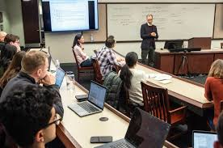
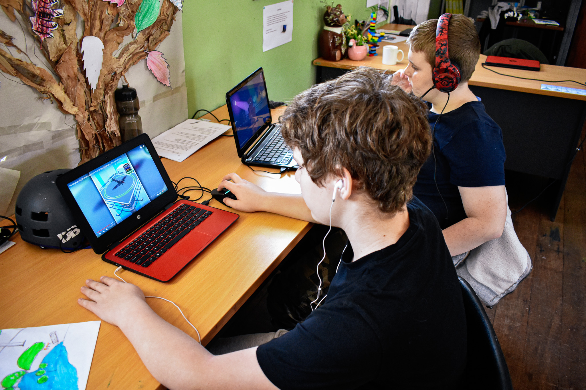

Our Programs
Legal Literacy Workshops
We run workshops in schools, barangays, and community centers that teach essential rights (labor, family, tenants' rights, how to file complaints, and where to go for help). Workshops are interactive and use local examples so attendees can immediately apply what they learn.
Led by law students and volunteer lawyers, participants receive pocket guides with key contacts and step-by-step legal actions. We aim to empower communities with practical knowledge.
Free Legal Aid Clinics
Our monthly clinics allow individuals to consult volunteer lawyers, get legal intake, and receive referrals. Urgent cases are coordinated with pro bono lawyers or the Public Attorney’s Office.
Clinics focus on accessibility, providing translation for local dialects, and ensuring safe and confidential consultations.
Anti-Corruption & Accountability
We run campaigns to increase transparency in local governance, promote citizen reporting of abuses, and support policy efforts to strengthen oversight mechanisms.
Programs include workshops for local officials, online webinars for youth, and reporting toolkits for communities.
Youth & Student Programs
Students and youth volunteers are at the heart of our advocacy. We run campus clubs, legal hackathons, and mentorship programs that teach leadership, legal research, and community organizing.
Youth participants often assist in community workshops and outreach campaigns, learning practical skills while serving their neighborhoods.
Online Outreach & Education
In addition to in-person programs, we provide online resources: webinars, instructional videos, and downloadable guides to reach people in remote or underserved areas.
Social media campaigns and virtual Q&A sessions increase access and allow participants to ask questions directly to legal volunteers.
Programs — Impact & Statistics
| Program | Sessions (2024) | People Reached |
|---|---|---|
| Legal Literacy | 42 | 3,500 |
| Legal Aid Clinics | 18 | 1,200 |
| School Outreach | 30 | 2,800 |
| Youth Programs | 25 | 1,100 |
| Online Programs | 50 | 8,000 |